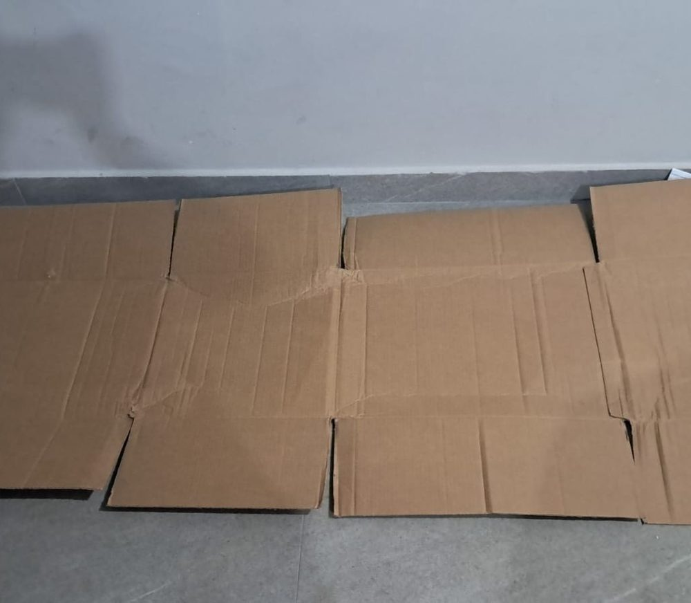
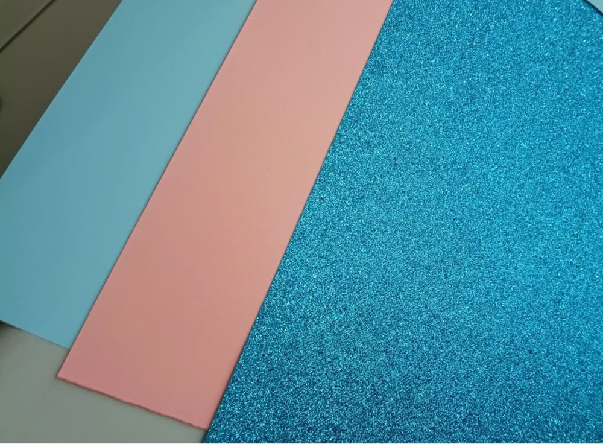
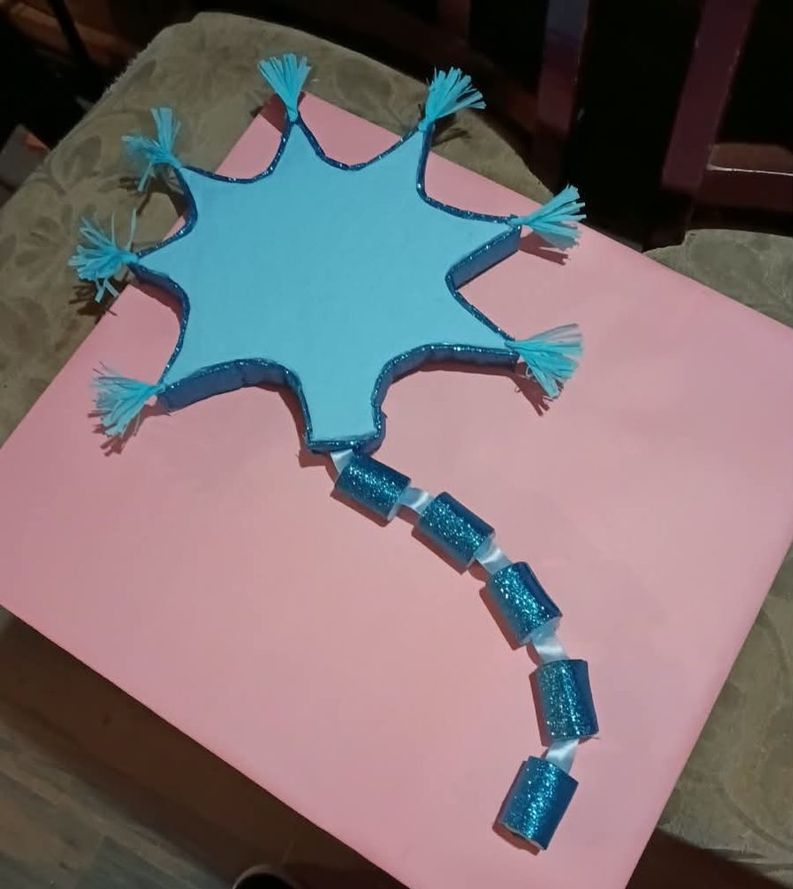
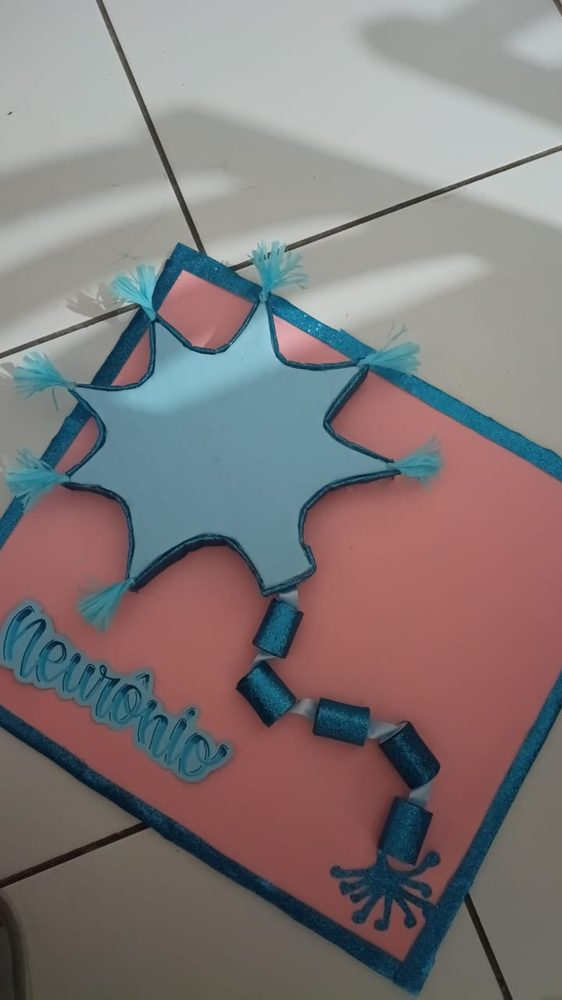
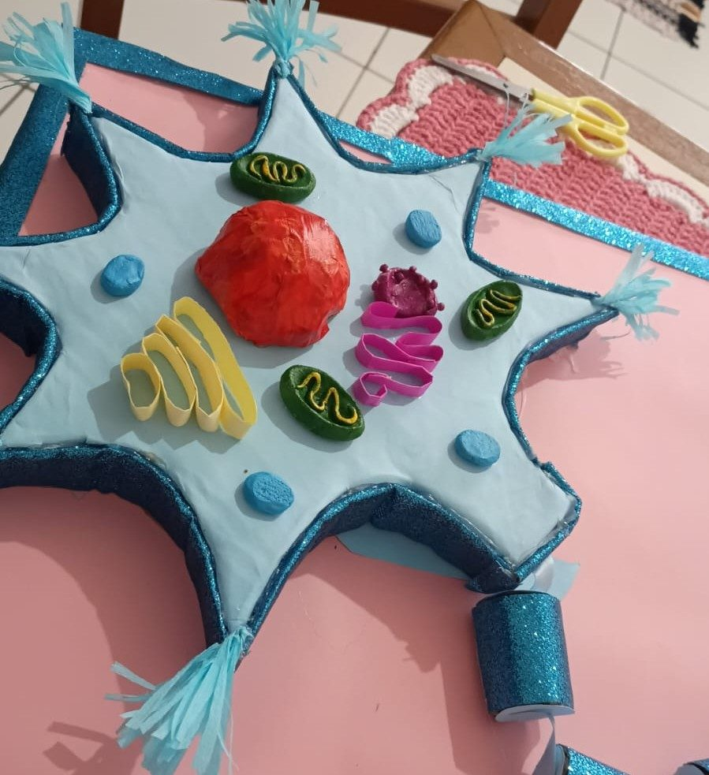
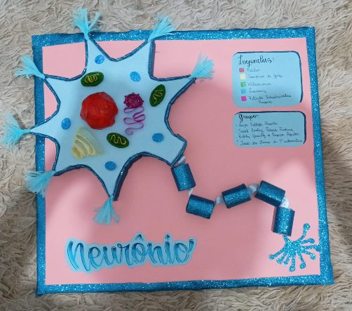
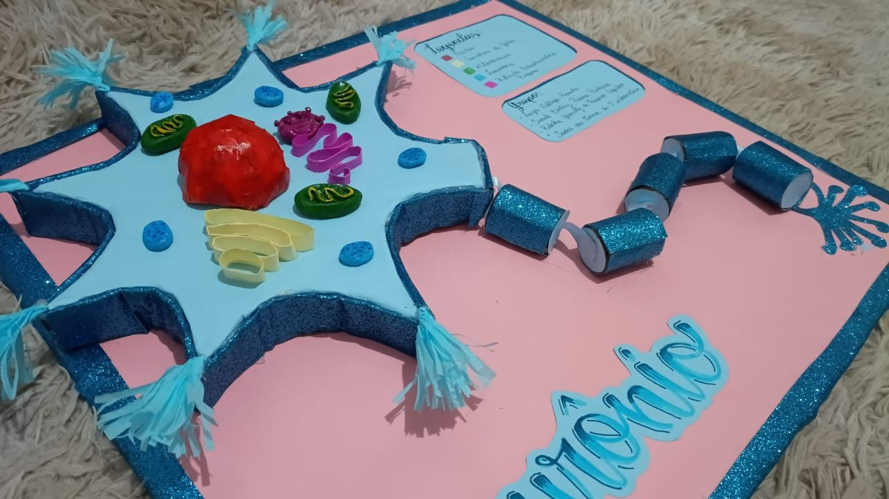
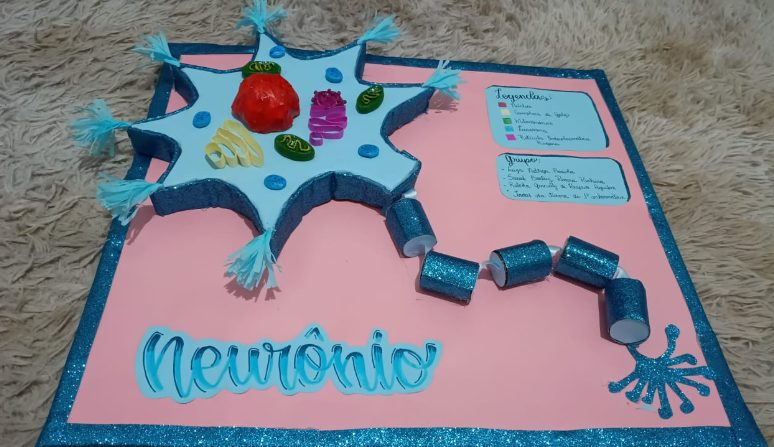
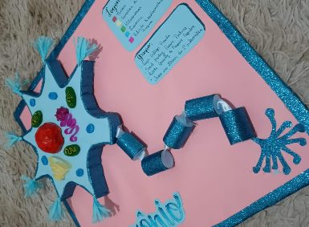

Estrutura
- Grande placa de papelão
- Pedaços de papelão para o neurônio
- 3 cartolinas para forrar a base
- 1 cartolina azul-claro
- 1 papel azul-escuro para detalhes
Do planejamento ao resultado final
Para complementar o conteúdo teórico sobre os neurônios, desenvolvemos uma maquete física representando essa célula e algumas de suas principais estruturas.
A construção foi realizada utilizando papelão, cartolinas, argila e outros materiais, buscando representar os componentes do neurônio de forma criativa e didática.
Inicialmente, utilizamos uma grande placa de papelão para servir como base da maquete. Depois, a superfície foi revestida com cartolinas coloridas.
Recortamos pedaços de papelão para construir o formato do neurônio, utilizando cartolina azul-claro para revestir sua estrutura.
Produzimos e adicionamos diferentes elementos para representar as organelas e outras partes presentes na célula, utilizando argila e materiais de papelaria.
Por fim, acrescentamos os detalhes em azul com glitter, a representação da bainha de mielina e os acabamentos decorativos.
Confira alguns registros das etapas de produção e do resultado da nossa maquete.






Veja o resultado final em diferentes ângulos.




A construção da maquete permitiu transformar o conteúdo estudado em uma representação visual, facilitando a identificação de algumas estruturas do neurônio e tornando o aprendizado mais prático.